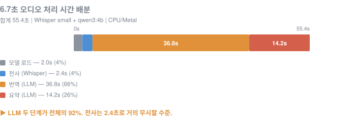
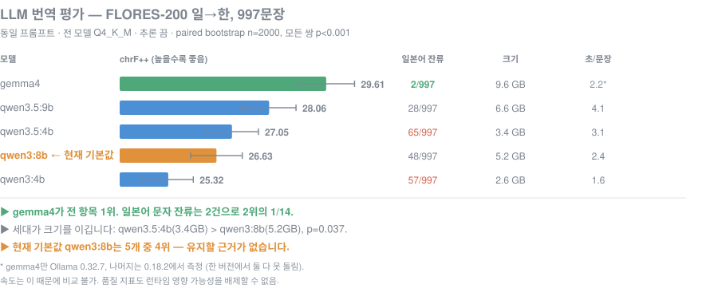

STT / PIPELINE / 2026
음성을 번역된 요약으로 잇는 파이프라인, sttpipe
역할 개인 프로젝트 (전 과정)
기간 2026
배포 GitHub 설치
faster-whisperOllamaOpenAI 호환 APIpyannote (선택)ffmpegPythonGradio
문제
Whisper는 전사까지만 해줍니다. 거기서 무슨 말을 했는지, 내 언어로, 요약해서까지 가려면 전사, 번역, 요약을 직접 이어붙이고 타임아웃, 폴백, 프롬프트 작업을 해야 합니다.
sttpipe는 그 접착 부분을 패키지로 만든 도구입니다. 녹음 파일 하나를 넣으면 번역된 요약이 나옵니다.
접근
- 3단계 파이프라인. 전사(faster-whisper, 기본 small, CPU int8) → 번역 → 요약.
- 로컬 우선 LLM. Ollama(qwen3, gemma 계열)나 OpenAI 호환 API를 선택.
--provider auto/ollama/openai/none.
- 여러 사용 형태. CLI(
sttpipe run meeting.wav --target ko), 라이브러리 import, Gradio 브라우저 데모, 세팅 점검 check --probe.
- 선택적 화자분리. pyannote 계열 diarize extra를 옵션으로 분리.

처리 시간의 92%가 LLM 두 단계, 전사는 4% 수준. 배포 설계를 좌우하는 단일 사실.
결과
92%
처리 시간이 LLM 두 단계에 집중, 전사는 4%
29.61
FLORES-200 ja→ko chrF++ 1위 gemma4
997
문장 paired bootstrap 2000회 번역 평가
- 병목은 LLM. 처리 시간의 92%가 번역과 요약, 전사는 4%. 배포 설계를 좌우하는 사실을 측정으로 못박음.
- STT 오류는 상류에서 결정. 금액, 날짜, 전화번호는 살아남고 고유명사와 전문용어에서 깨짐. 상류 오류라 하류 LLM을 키워도 복원 불가, 해법은
--whisper-model medium.
- 번역 모델 비교. FLORES-200 일본어에서 한국어 997문장, 5개 모델, paired bootstrap 2000회. 1위 gemma4(chrF++ 29.61), 현재 기본값 qwen3:8b는 5개 중 4위.

번역 LLM 5종 chrF++ 비교. 표본 100문장에서는 유의성이 없었고 997문장에서 전 쌍이 유의.
정직성 노트
표본 100문장에서는 모델 간 유의차가 없었고, 997문장으로 늘렸을 때 비로소 전 쌍이 유의했습니다. 측정 과정에서 발견한 버그(통화 단위 바꿔치기 428,000엔 → 428,000원, 프롬프트 지시문 누출, 채점기 오답 처리)를 그대로 문서화했습니다.